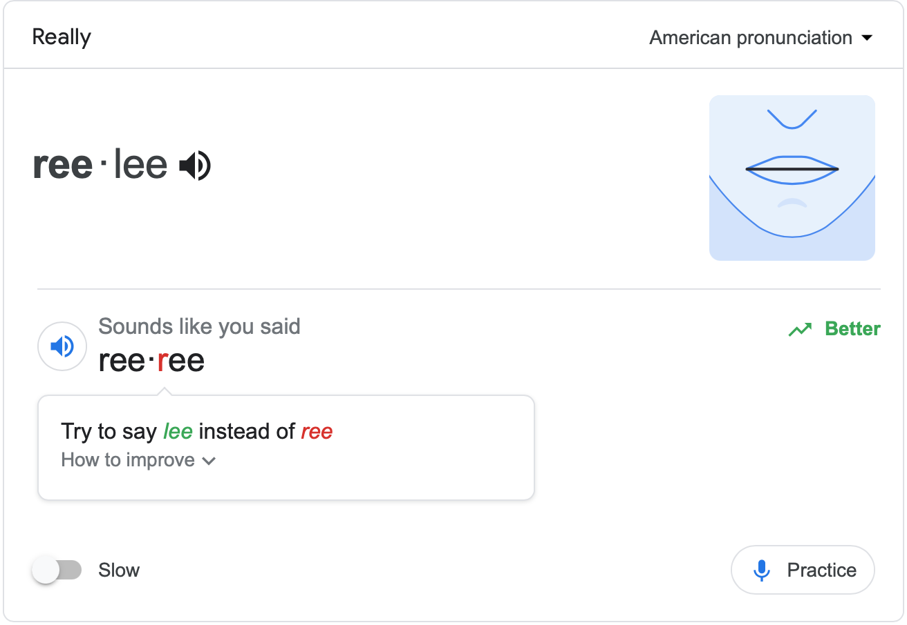

Table of Contents
1 「パパの発音悪いよ」
子供からよく英語の発音が悪いと指摘されます。 昔、とある日本人の先生から発音のトレーニングをしていただいたことがあって、日本人の苦手なLとR、母音の違い、子音のスピードなど、多少なりとも克服した気になっていました。
話を聞いてみると、リモート会議で"really"をよく"reuhrey"のように発音していているとか。その他にも聞いていて違和感を感じることが多い、などと生意気なことを言っています。これまで英語は通じればOKと、半ば開き直ってきましたが、相手に違和感を与えて続けているとなると、気になります。
2 googleの発音判定サービス
googleに発音判定サービスがあるのをご存じでしょうか。googleの検索画面で How to pronounce <word> のように入れて検索すると単語にもよりますが、発音判定ができるようになります。

アメリカ式(?)の見慣れない発音記号の右にある黒のスピーカーアイコンを押すとお手本を聞くことが出来ます。右下のPracticeアイコンを押してマイクに向かって単語を話すとgoogleがあなたの発音を判定してくれます。この例では、私のreallyはLがRに聞こえたと言われています。青いスピーカーアイコンを押すと、あなたの発音を聞くことができます。
googleの発音判定はかなりシビアです。基本単語に多くの駄目だしをされてショックです。通じる発音と正しい発音には大きなギャップがあることを思い知らされました。私の場合はこのreallyとwilliamsがどうしてもOKになりませんでした。
このサービスの問題は、How to improveを押して見られるアドバイスが大して役に立たないことです。この例のようにLがRに聞こえるくらいならわかりやすいのですが、例えば i の音が違うと言われて舌の位置がどうこうと文字で書かれても、それを読んで改善できないのです。アルゴリズムの改善が望まれます。